تطبيقٌ إسلاميٌّ شاملٌ لغنو/لينكس: مواقيتُ الصلاة والأذانُ والقرآنُ الكريم بتفسيره والأذكارُ وحصنُ المسلم والإذاعات، بسمةٍ زجاجيّةٍ وخلفيّات مساجد، ويعمل دون إنترنت.
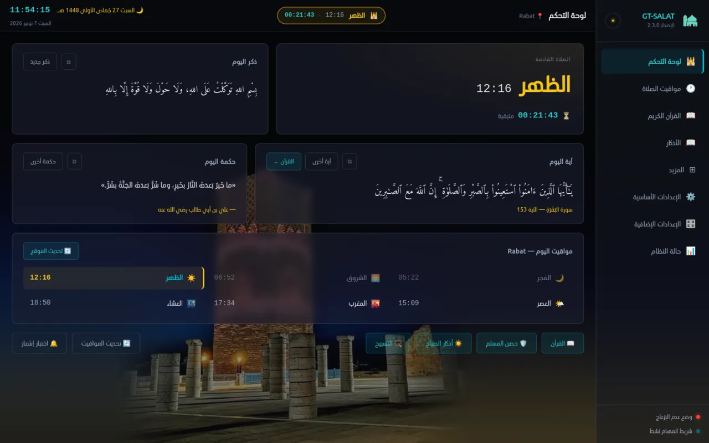
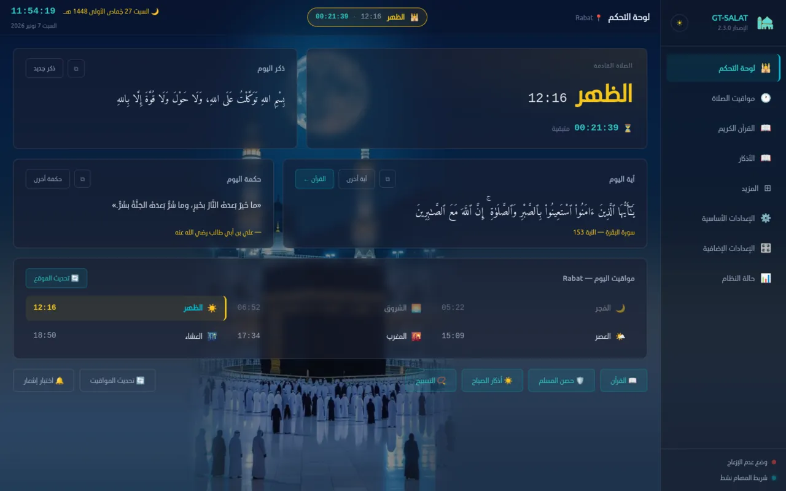
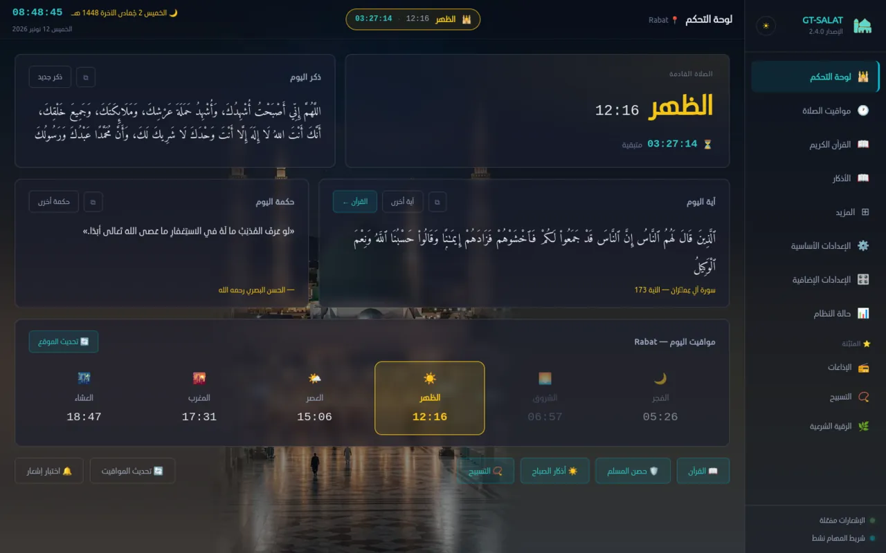
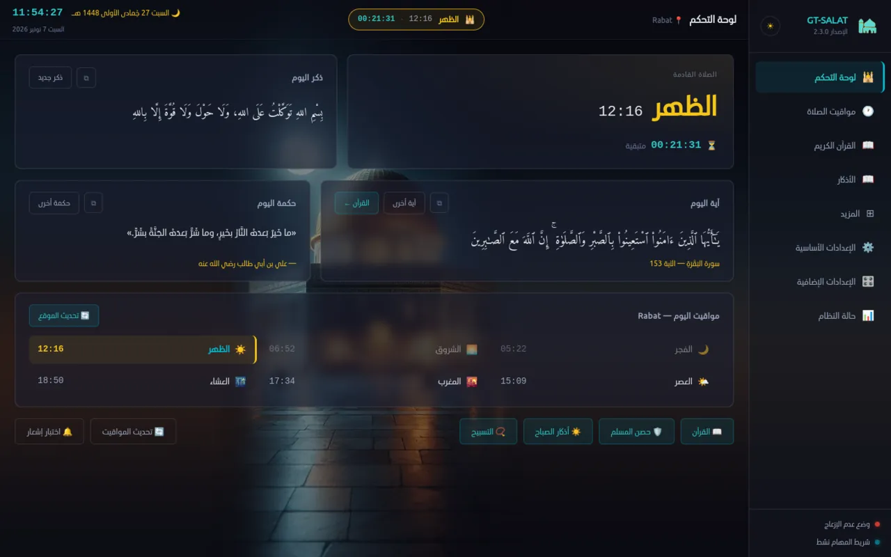
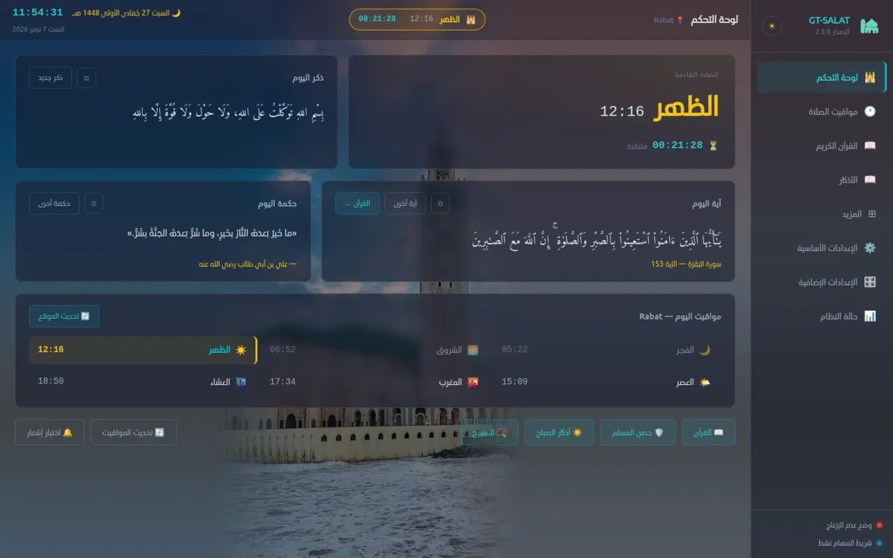
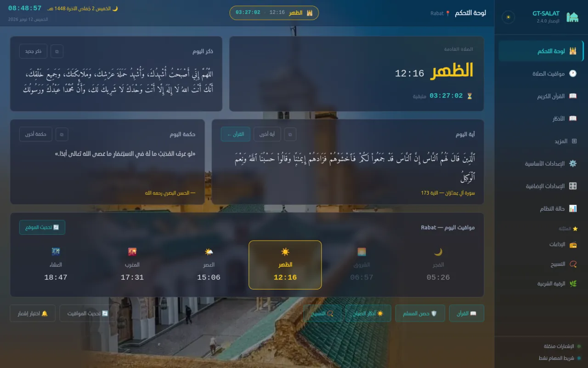
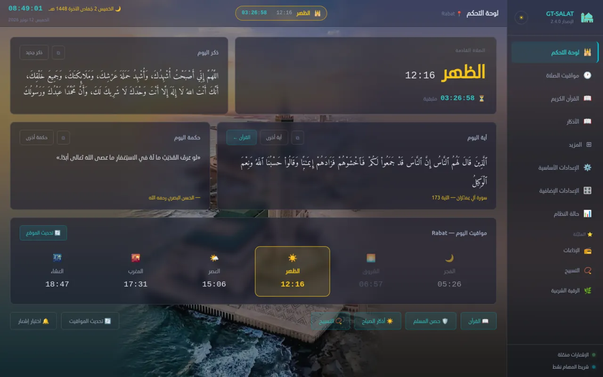
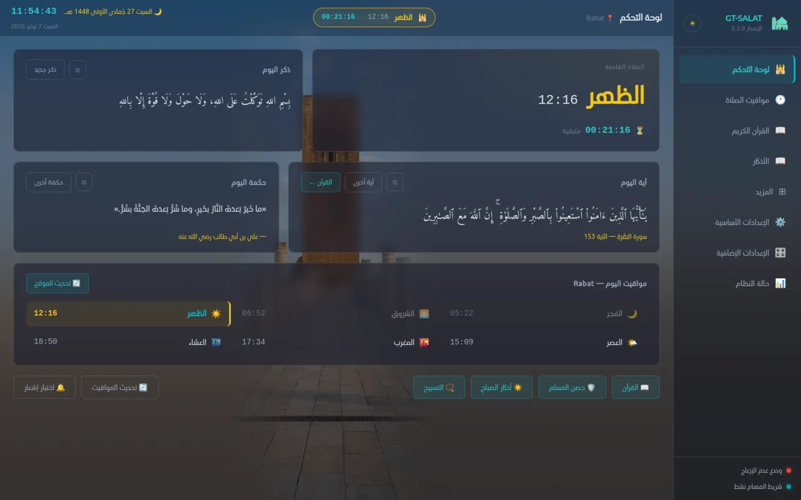
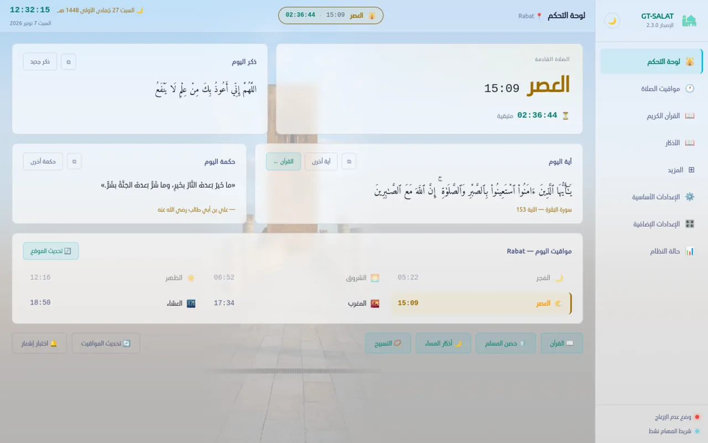
لقطةٌ حقيقيّةٌ من التطبيق · مسجد حسّان ليلاً · الرباط
الإصدار 2.5 يعرض رواية ورش بنصّها الحقيقيّ وبالخطّ المغربيّ، والقرآن متّصلاً كالمصحف، ويحمل من نسخة الهاتف 2.3 تسجيلاتٍ جديدةً للأذكار ونافذة المواقع السابقة.
كلُّ ما يحتاجه المسلم في يومه على حاسوبه، بواجهةٍ عربيّةٍ زجاجيّةٍ في الوضعين الداكن والفاتح.
22 طريقة حساب، ومواقيت الإنترنت بإزاحة الخادم مع حسابٍ محلّيٍّ احتياطيّ، وأذانٌ بالصيغة المغربيّة أو المشرقيّة أو بملفّك، ونافذة أذانٍ بملء الشاشة.
نصٌّ متّصلٌ كالمصحف باستماعٍ آية-بآية وتظليلٍ متزامن، وتلاواتٌ كاملة، و4 روايات (ورش بالخطّ المغربيّ)، ومصحفٌ مصوَّر، وتفسيرٌ ميسّر، وبحثٌ في الآيات، وتنزيلٌ للعمل دون إنترنت.
36 إذاعةً قرآنيّةً ببثٍّ حيٍّ يعيد الاتّصال تلقائيّاً، مع مؤقّتٍ للإيقاف وإذاعاتٍ مخصّصة.
أذكار الصباح والمساء والنوم بعدّها وصوتها المسجَّل، وحصن المسلم في 132 باباً، وتسبيحٌ صوتيّ ومختلط.
لوحاتٌ كالزجاج فوق خلفيّات المساجد أو صورتك أنت، بشدّة تغبيشٍ تضبطها ودرجة ظهورٍ تختارها.
يقرأ التطبيق إزاحة نظامك الفعليّة ولو قَدُمت بيانات المناطق المضمَّنة، ولك تصحيح التوقيت يدويّاً.
دروسٌ مصوَّرة على المذهب المالكيّ بمصادرها، وأداتا القصر والطهر، والرقية الشرعية نصّاً واستماعاً.
عند فتح طرفيةٍ جديدة: البسملة وذكرٌ عشوائيّ والصلاة القادمة ووقتها والمتبقّي. يدعم bash وzsh وfish.
أيقونةٌ في شريط المهام بقائمة سياق، وتصغيرٌ إليها بدل الإغلاق، وبدءٌ تلقائيّ مع الجهاز.
تُنزَّل الحزمة المناسبة لجهازك وصيغته وتُتحقَّق بصمتها وتُثبَّت من مكانها، مع خيارٍ للنسخ التجريبيّة.
بطاقةٌ بعدٍّ للإفطار والسحور وإمساكيّةٌ شهريّة، وتذكيرات السُّنن الموسميّة بحسب التقويم الهجريّ.
حزمةٌ واحدةٌ تنتقل بين الحاسوب والهاتف بإعداداتك ومواقيتك، والمستورِد يختار ما يستعيد.
لقطاتٌ من الإصدار 2.5.0 بالسمة الزجاجيّة. انقر لتكبيرها.
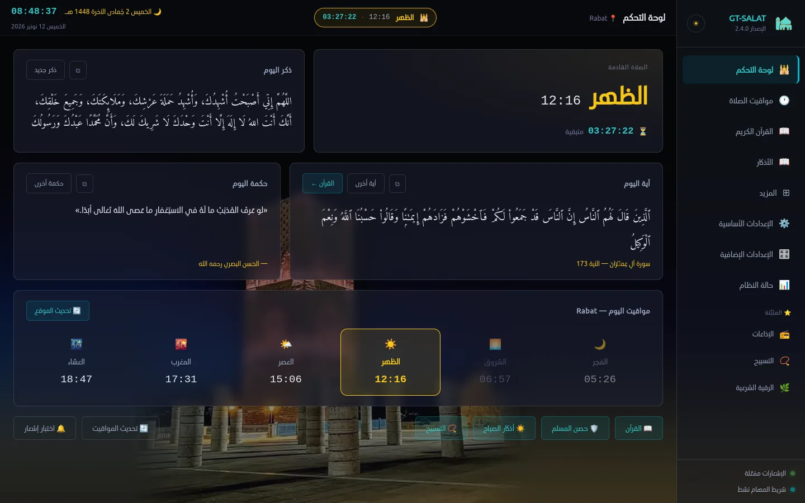
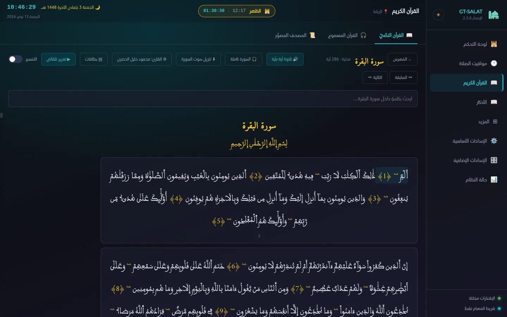
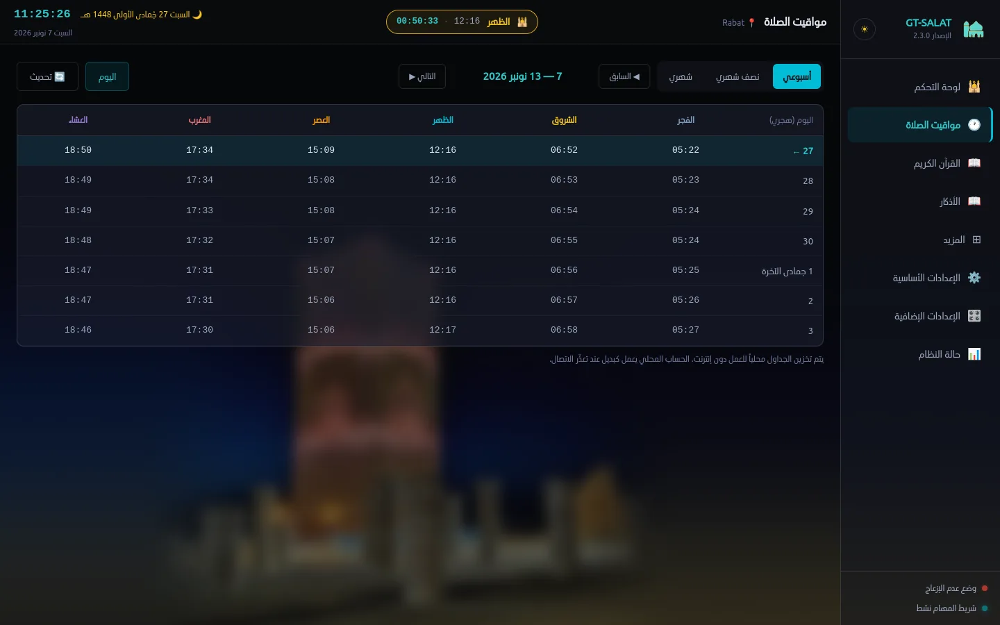
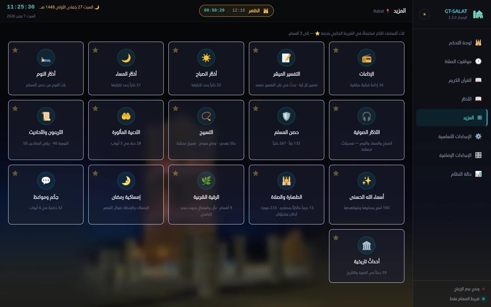
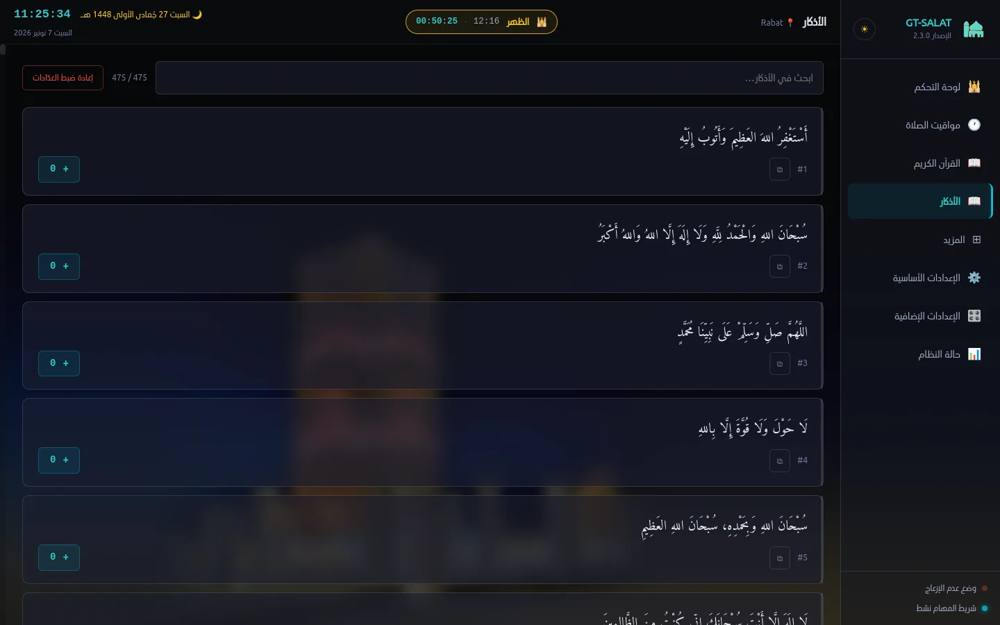
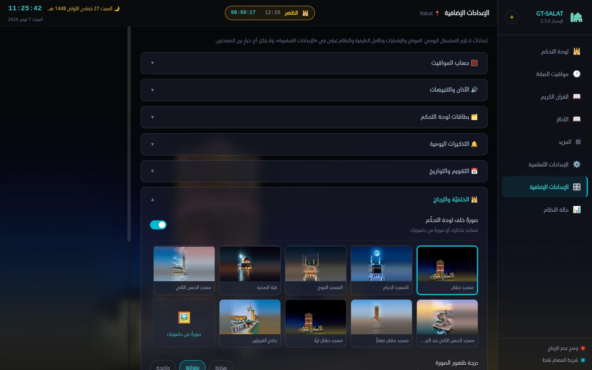
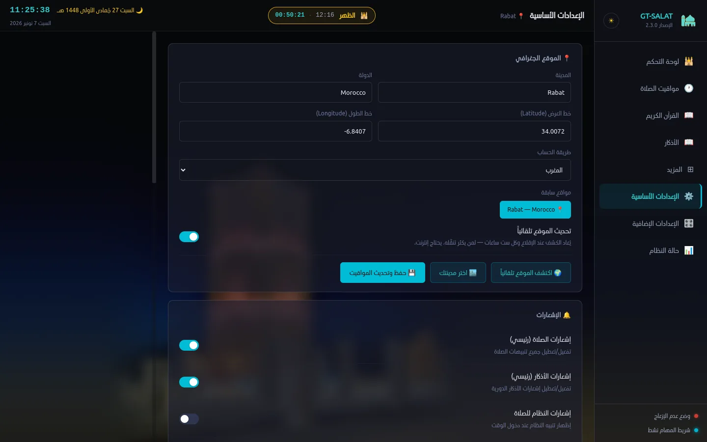
كلُّ ما يُمكن أن يعمل محلّيّاً يعمل محلّيّاً،
وما يحتاج إنترنت يُنزَّل مرّةً ليعمل بعدها دون اتّصال.
خصوصيّةٌ كاملة: لا حساباتٌ ولا تتبُّعٌ ولا إعلانات. حساب المواقيت كلّه على جهازك.
| arm64 | AppImage | 149 MB · 30e0ed0b… |
| arm64 | DEB | 112 MB · 43439480… |
| armv7l | AppImage | 138 MB · edde0aed… |
| armv7l | DEB | 111 MB · e1b68b86… |
من الإصدار 2.2.1 فما بعد يصلك الجديد من داخل التطبيق: «الإعدادات الإضافيّة ← حول ← فحص التحديثات».
sudo apt install ./GT-SALAT_2.5.0_amd64.debsudo dnf install ./gt-salat-2.5.0-1.x86_64.rpmchmod +x GT-SALAT-2.5.0-x86_64.AppImageلأندرويد بالمزايا نفسها، بنكهةٍ حرّةٍ بلا خدمات Google. آخر إصدار: v2.3.1.
تطويرٌ شاملٌ مع الحفاظ على روح المشروع الأصليّ.
| الجانب | GT‑salat‑dikr (الأصل) | GT‑SALAT (الجديد) |
|---|---|---|
| الواجهة | طرفيّة (Bash) | رسوميّةٌ كاملة بسمةٍ زجاجيّة |
| التكامل مع الطرفيّة | افتراضيّ | اختياريٌّ من الإعدادات |
| التثبيت | سكربت bash | AppImage · DEB · RPM، وتحديثٌ من الداخل |
| المواقيت | حسابٌ محلّيّ | الإنترنت بإزاحة الخادم + حسابٌ محلّيّ |
| الأذان | ملفٌّ ثابت | مغربيٌّ ومشرقيّ، كاملٌ وقصير، ومخصّص |
| المحتوى | أذكار | قرآنٌ وتفسيرٌ وحصنٌ وإذاعاتٌ ودروس |
محتوىً وبياناتٌ من مشاريع GNUTUX ومصادرَ حرّة، بالشكر والتقدير.
مطوّرُ برمجيّاتٍ حرّةٍ ومفتوحةِ المصدر، عربيّة الهويّة.